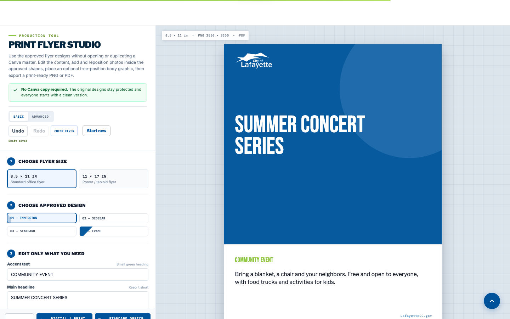
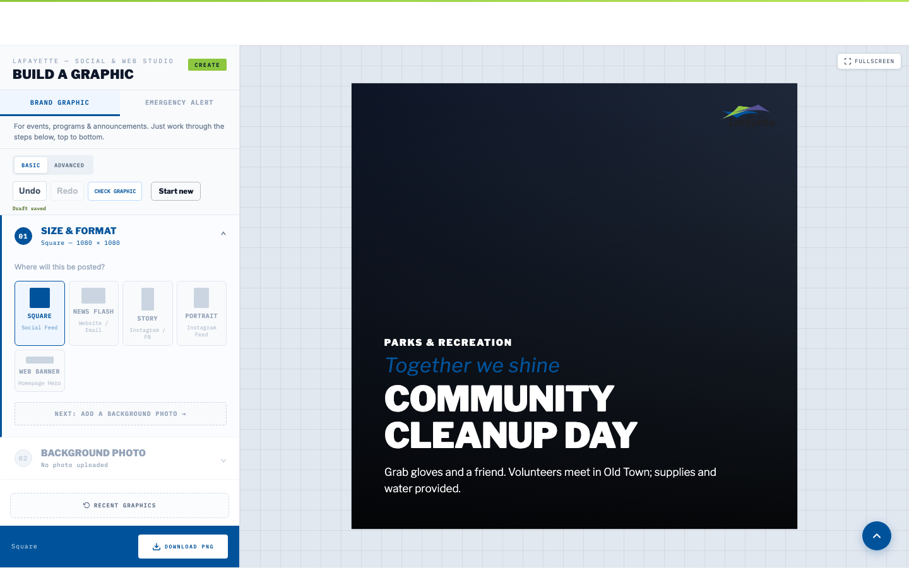
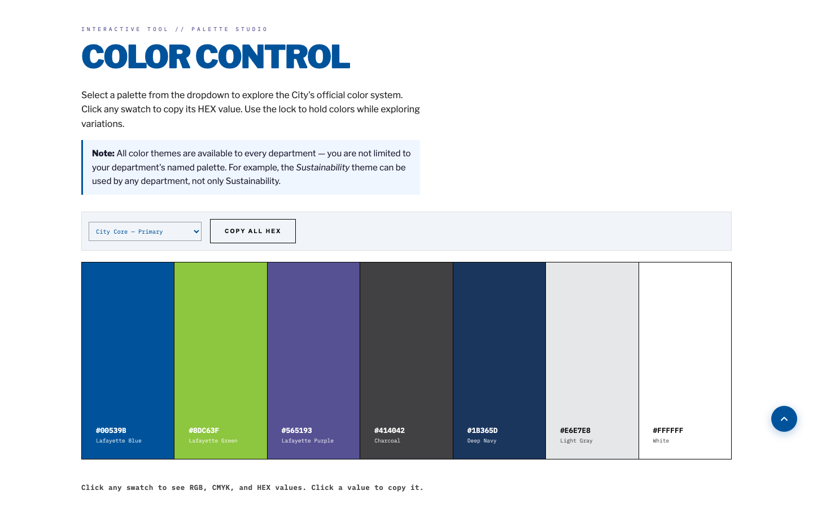
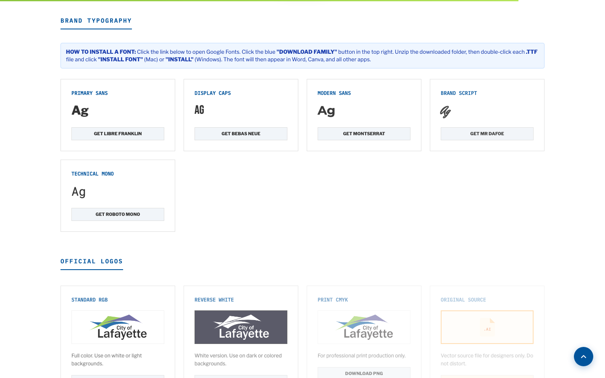
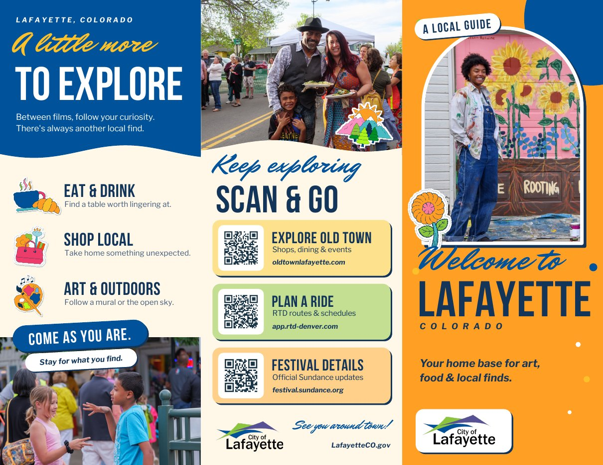
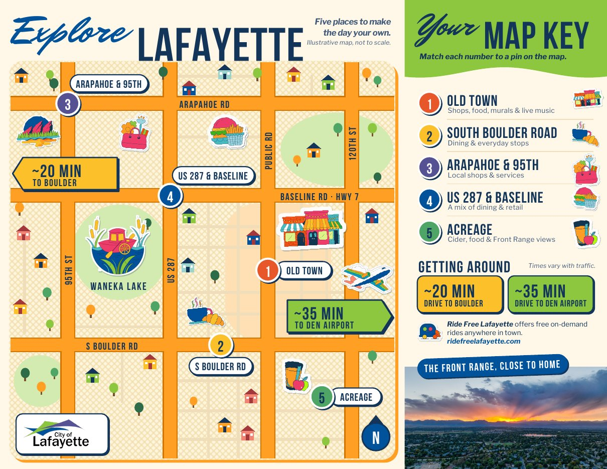

Project 01 · City of Lafayette2023 — present
One brand for a whole city
 Lafayette Brand Hub
Lafayette Brand Hub
The brief
More than ten City departments communicate with residents every week. They needed one brand they could use without a designer in the room.
My role
I guide brand standards, logo use and accessible design for more than ten departments and review their visual materials for consistency. I work with the Communications Director and department heads to define the message, the audience and the visual approach for City communications.
The decisions
- A tool people open, not a manual they file. I built the Lafayette Brand Hub: brand foundation, writing standards, official logos, a photo library, templates and fonts in one page that runs in any browser. Nothing to install, no IT request.
- Make the right version the easy one. In the Hub's Print Flyer Studio, staff edit only the text and photos inside approved flyer designs and export a print-ready file. The Social & Web Studio does the same for social posts, web banners and emergency alerts.
- Accessibility as a default. The Hub shows staff which color pairs pass WCAG contrast and guides how to write alt text, so the accessible choice is the easy one.
- Room for sub-brands. Somos Lafayette, the City's bilingual outreach identity, lives inside the Hub. See project 02 →
- Templates over one-offs. Reusable templates and a shared photo and video library let departments produce consistent work on their own.
Outcome
- One brand system guiding more than ten departments.
- The City publishes its brand guidelines on lafayetteco.gov.
- Role
- Senior Communications Specialist
- Organization
- City of Lafayette, Colorado
- Worked with
- Communications Director · department heads
- Years
- 2023 — present
- Outcome
- One brand system guiding 10+ departments







